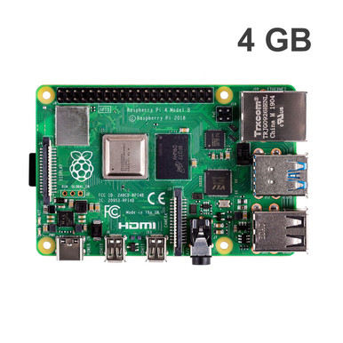
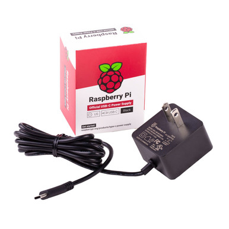

Home / Detection Electronics / Raspberry Pi Listeners / ADS-B feeder
Detection Electronics · Feeder sit
Dual-Band ADS-B Feeder Kit (Raspberry Pi)
$299 / $369 Hardware Only / Ready-to-Run
Hardware Only
$299
The kit as the shop ships it. You load the listener image.
Ready-to-Run
$369
Same hardware. We load the listener image before it ships.
Includes a 64GB card we load. Extra business day. Ships from us after we load it.
- Raspberry Pi 4 (4 GB) feeder sit for 1090 and 978 ADS-B
- Official 15 W USB-C. Listen radio. Both band whips
- No Remote ID board. No hard case. Not the $199 ADS-B + Remote ID kit
- One radio — the two whips are not simultaneous without a second radio or a switch
- No filter. No outdoor N-female 1090. Not V4. Not Fusion Sensor
Hardware Only ships from US shops after payment. Ready-to-Run ships from us after we load the listener image. Weekend orders ship Monday. Sold by Dark Sky Systems LLC. Receive only. Card via Stripe. We do not store it.